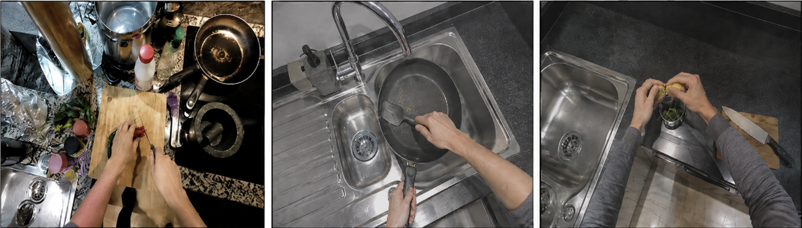
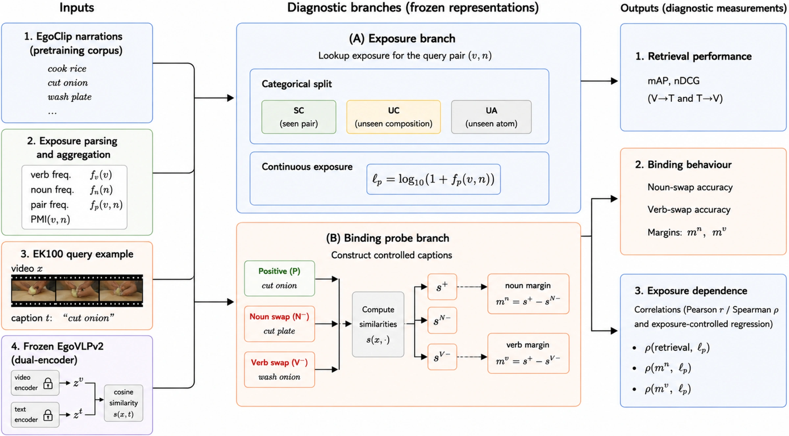
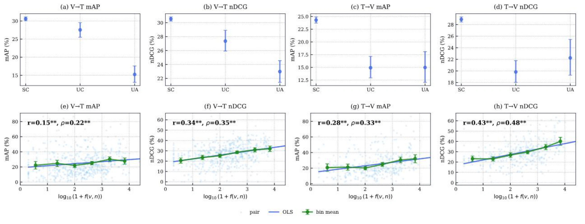
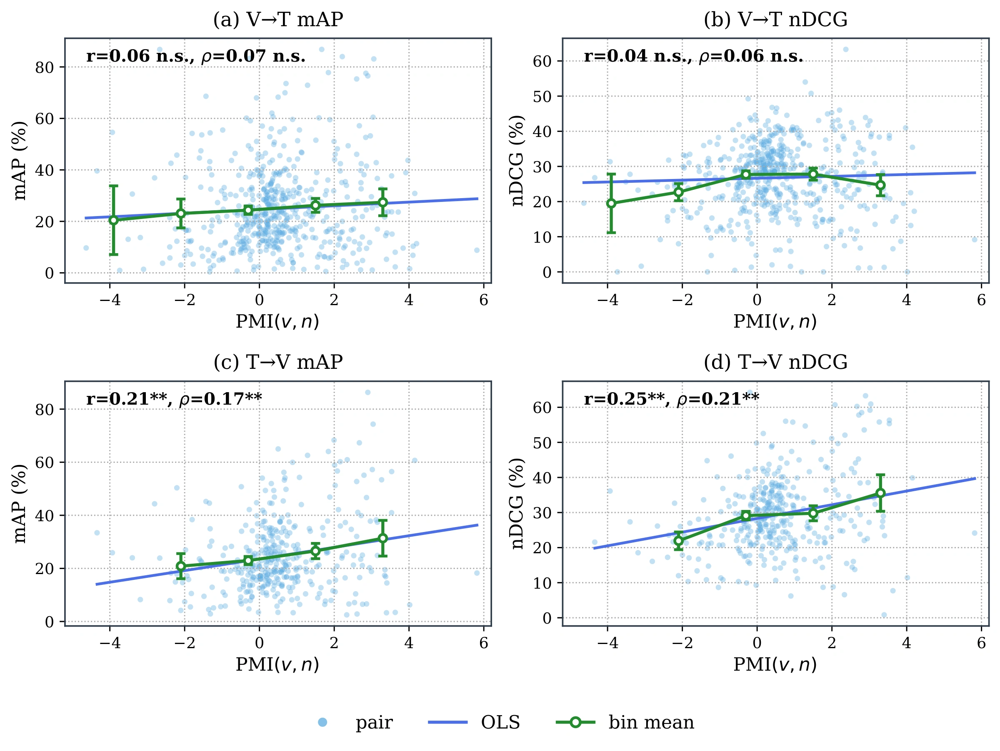
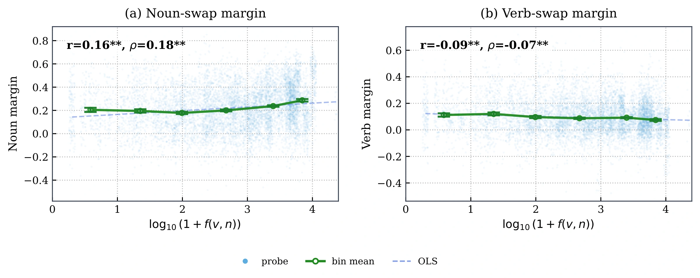

EGOCENTRIC VIDEO–TEXT RETRIEVAL
Better Retrieval,
Not Better Binding
Pretraining Exposure in Egocentric Video Retrieval
Ego-ExBind
Does a model understand an action, or recognise a familiar composition?
A diagnostic protocol separating pretraining exposure from verb–noun binding.

EPIC-KITCHENS-100 examples · Dissertation Fig. 2.1
Exposure-associated retrieval gains do not necessarily imply stronger verb–noun binding.
01 / DIAGNOSTIC PROTOCOL
What was seen. What was learned.
Ego-ExBind combines an exposure ledger with controlled caption comparisons. Retrieval and binding are evaluated together, using EgoVLPv2 pretrained on EgoClip.

Exposure ledger
Verb, noun and verb–noun pair frequencies are mapped from EgoClip narrations into the EK100 taxonomy. Seen and unseen are defined relative to this pretraining corpus.
Binding probes
Keep the verb fixed and swap the noun; keep the noun fixed and swap the verb. Compare each alternative with the correct caption using similarity margins and accuracy.
02 / PRETRAINING EXPOSURE
Familiar atoms. Unseen combinations.
The 9,668 EK100 retrieval queries are partitioned by their exposure in EgoClip. An unseen composition contains familiar verbs and nouns that were not observed together in the ledger.
- Seen Composition SC
- 8,648
- Unseen Composition UC
- 713
- Unseen Atom UA
- 307
Pair observed in pretraining
Atoms observed; pair unobserved
At least one atom unobserved

Pair exposure predicts retrieval beyond the marginal frequencies of individual verbs and nouns. These are associations, not interventions on pretraining data.

03 / VERB–NOUN BINDING
Retrieval is only half the story.
On 8,592 eligible seen-composition probes, the frozen model separates noun-swapped captions more strongly than verb-swapped captions. Higher pair exposure is associated with stronger noun binding, but not stronger verb binding.
A margin is the similarity of the correct caption minus that of its swapped alternative. Positive values favour the correct caption.

04 / COUNTERFACTUAL EXPOSURE
Change exposure input.
Keep the checkpoint fixed.
The pretrained backbone stays frozen during adapter/bias training. At counterfactual evaluation, the trained adapters and bias network are fixed; only the exposure input changes.
Original
Each caption retains its true exposure vector.
Zeroed
Every caption receives the same zero exposure input.
Shuffled
Exposure vectors are reassigned across captions.
| Condition | mAP | nDCG |
|---|---|---|
| Zeroed | 32.91 | 43.04 |
| Original | 33.70 +0.79 | 44.22 +1.18 |
| Shuffled | 32.56 | 42.80 |
Changes in the Original row are percentage-point differences from Zeroed. T→V rankings remain unchanged by construction.
| Condition | SC | UC |
|---|---|---|
| Zeroed | 33.94 | 26.14 |
| Original | 34.97 +1.03 | 24.51 −1.63 |
| Shuffled | 33.56 | 26.15 |
Relative to Zeroed, true exposure improves SC retrieval but reduces UC retrieval.
| Condition | Noun | Verb |
|---|---|---|
| Zeroed | 0.058 | 0.065 |
| Original | 0.058 | 0.064 |
| Shuffled | 0.058 | 0.064 |
Binding margins remain essentially unchanged at the reported precision.
Reported values: dissertation Table 4.6. Zeroed is the base ranking of the jointly trained checkpoint, not the original frozen zero-shot baseline.
BETTER RETRIEVAL ≠ BETTER BINDING
Correct exposure information can change retrieval rankings without a corresponding improvement in compositional binding.
This evidence concerns a fixed-checkpoint scoring pathway, not a change to the pretraining corpus.EGO-EXBIND
Explore the research.
Exposure ledger, retrieval evaluation, binding probes and diagnostic interventions.